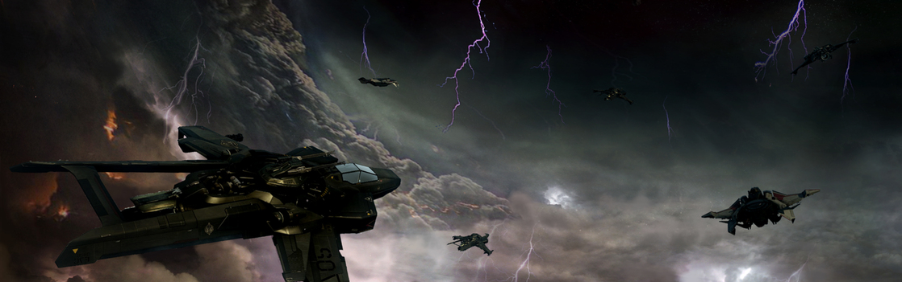

SYSTEM: OSIRIS

Excurs - System: Osiris
Osiris ist ein rot-gelber Zwerg, der von einem Planetenpaar und einem dichten Asteroidengürtel umkreist wird. Als Osiris in den späten 2700er Jahren entdeckt wurde, gab es nur wenig, womit es Aufmerksamkeit erregen konnte. Mit seinem kleinen planetaren System und dem Asteroidenfeld wurde es schnell mehr als unmittelbare Gefahr für die Navigation statt als ein potenziell lukratives Bergbauziel eingestuft. So schien sich Osiris anfangs nur über seine Nähe zu viel benutzten Sprungrouten und über das Potential, als Betankungsstandort innerhalb großer Handelslinien zu dienen, zu definieren. Eine vollständige Untersuchung des Systems dauerte dann allerdings deutlich länger als erwartet, da sich die UEE plötzlich mitten in einer Revolution befand.
Während die wissenschaftlichen Teams auf dem Weg zum Osiris System waren, um mit ihrer Arbeit beginnen zu können, wurde der Bevölkerung Bildmaterial des Massakers auf Garron II zugespielt, wodurch ein öffentlicher Aufschrei und Demonstrationen entfacht wurden. Das Messer-Regime, das bereits vollkommen überfordert war, sah sich damit konfrontiert, dass jeder Aufstand, den sie niederschlugen, nur andere dazu ermutigte und inspirierte, deren Platz einzunehmen.
Als sich der Staub legte und sich die Regierung endlich wieder auf das Studium dieses Systems konzentrieren konnte, das in den Wirren in Vergessenheit geraten war, lieferten die ersten Untersuchungsergebnisse der inneren Planeten faszinierende Daten. Unter der Wolkenschicht fand sich eine äußerst aktive Biosphäre, die menschliches Leben ermöglichen würde und die einer erstaunlichen Vielzahl von Spezies, die noch nirgends in der bekannten Galaxie gefunden worden waren, einen Lebensraum gewährte.
Das Osiris System war das erste System, das daher zu einem Entwicklungssystem unter dem Fair Chance Act erklärt wurde. Dazu kam es mit großem Tamtam, nachdem die Wissenschaftler auf Osiris I (heute als Etos bekannt) eine höhere Lebensform entdeckte, die Primaten glich. Das System wurde für Umweltschützer und Expansionisten gleichermaßen zu einem aufsehenerregenden Rechtsfall. Als erdähnliche Welt, die für menschliche Siedlungen nur geringfügig terraformt werden müsste, wurde Osiris ein Spannungsgebiet für eine große Debatte über die moralischen Grundsätze der Expansion. Obwohl der Gedanke, bewohnte Welten für eine menschliche Besiedlung zu terraformen, in diesem politischen Klima als unmoralisch betrachtet wurde, stellten Kritiker die Legitimität des Erstkontakts und einer möglichen Erhebung dennoch in Frage, auch wenn die einheimischen Spezies ein Empfindungsvermögen besitzen sollten.
Während die offizielle Kennzeichnung und die daraus resultierende Furore dem System somit Aufmerksamkeit bescherte und seine inneren Planeten Schmuggler, Piraten und Schlimmeres abwehren konnte, hat sich sein Glanz inzwischen abgenutzt. Aufgrund drohender Haushaltskürzungen hat das Militär seinen Schutz des Osiris Systems gelockert. Das bedeutet, dass das UEE-Militär heute nur noch wenig Mühen in das Patrouillieren im System steckt, abgesehen von gelegentlichen Flottenübungen.

Während die wissenschaftlichen Teams auf dem Weg zum Osiris System waren, um mit ihrer Arbeit beginnen zu können, wurde der Bevölkerung Bildmaterial des Massakers auf Garron II zugespielt, wodurch ein öffentlicher Aufschrei und Demonstrationen entfacht wurden. Das Messer-Regime, das bereits vollkommen überfordert war, sah sich damit konfrontiert, dass jeder Aufstand, den sie niederschlugen, nur andere dazu ermutigte und inspirierte, deren Platz einzunehmen.
Als sich der Staub legte und sich die Regierung endlich wieder auf das Studium dieses Systems konzentrieren konnte, das in den Wirren in Vergessenheit geraten war, lieferten die ersten Untersuchungsergebnisse der inneren Planeten faszinierende Daten. Unter der Wolkenschicht fand sich eine äußerst aktive Biosphäre, die menschliches Leben ermöglichen würde und die einer erstaunlichen Vielzahl von Spezies, die noch nirgends in der bekannten Galaxie gefunden worden waren, einen Lebensraum gewährte.
Das Osiris System war das erste System, das daher zu einem Entwicklungssystem unter dem Fair Chance Act erklärt wurde. Dazu kam es mit großem Tamtam, nachdem die Wissenschaftler auf Osiris I (heute als Etos bekannt) eine höhere Lebensform entdeckte, die Primaten glich. Das System wurde für Umweltschützer und Expansionisten gleichermaßen zu einem aufsehenerregenden Rechtsfall. Als erdähnliche Welt, die für menschliche Siedlungen nur geringfügig terraformt werden müsste, wurde Osiris ein Spannungsgebiet für eine große Debatte über die moralischen Grundsätze der Expansion. Obwohl der Gedanke, bewohnte Welten für eine menschliche Besiedlung zu terraformen, in diesem politischen Klima als unmoralisch betrachtet wurde, stellten Kritiker die Legitimität des Erstkontakts und einer möglichen Erhebung dennoch in Frage, auch wenn die einheimischen Spezies ein Empfindungsvermögen besitzen sollten.
Während die offizielle Kennzeichnung und die daraus resultierende Furore dem System somit Aufmerksamkeit bescherte und seine inneren Planeten Schmuggler, Piraten und Schlimmeres abwehren konnte, hat sich sein Glanz inzwischen abgenutzt. Aufgrund drohender Haushaltskürzungen hat das Militär seinen Schutz des Osiris Systems gelockert. Das bedeutet, dass das UEE-Militär heute nur noch wenig Mühen in das Patrouillieren im System steckt, abgesehen von gelegentlichen Flottenübungen.
Osiris I (Etos)
Bittet einen Durchschnittsbürger die sagenumwobene Biosphäre von Osiris I zu beschreiben und Ihr werdet wahrscheinlich Beschreibungen über unglaublich dichte Regenwälder hören, in denen es nur so von allen möglichen Lebensformen wimmelt. Die Realität könnte nicht weiter davon entfernt sein. Etos liegt auf der äußersten Sonnenseite des grünen Gürtels von Osiris und das Leben dort hat sich ganz anderes daran angepasst als auf der Erde. Zunächst einmal muss man verstehen, dass Leben auf Etos nicht im Freien gedeiht. Es gibt keine belebten Wälder, die in den Himmel ragen oder wilde, ungezähmte Polar-Steppen. Während die Atmosphäre menschliches Leben ermöglicht, bedeutet die Nähe zu dem Stern, dass die meiste Evolution unterirdisch stattfinden muss, wo sie vor den anfänglichen Scans versteckt war. Etos verfügt über eine umfangreiches, kilometertiefes Höhlensystem, das sich durch den Planetenmantel schlängelt. Dort hat eine Vielzahl an Lebensformen Einzug gehalten, von stacheligen Langusten bis zu einer Spezies, die man am besten als eine prismatische Scheibe beschreiben könnte. Einer der entscheidenden Gründe für Etos offiziellen Schutz sind die „Phares“-Affen, eine leicht menschähnliche Primatenart, von denen Biologen glauben, dass sie das Potential hat, höheres Denken zu entwickeln. Durch etwas, das man nur als ein „natürlich trauriges Gesicht“ und eine dem Anschein nach sanfte Natur beschreiben kann, wurden die Affen das ikonische Bild der Etosianischen Schutzbewegung. In den vergangenen Jahren wurde Etos mehr und mehr die Heimat für mutige Schmuggler und illegale Forschungsuntersuchungen von Unternehmen. Diese reichen von „Brandrodungs-Piraten, die nach Phares-Affenschädelbecher suchen bis hin zu Großkonzernen, die die unterirdische Biomasse Kubikkilometer für Kubikkilometer durchforsten – auf der Suche nach allem, was irgendwie nützlich sein könnte. Es gibt keine definierten Bereiche für diese illegalen Besucher, außerdem sind die Landezonen für diejenigen, die durch den Asteroidengürtel fliegen und in der Nähe des Planeten herumstreunen, nur selten und dann auch nur schwierig zu orten. Es gibt nur wenige große „Öffnungen“ zu diesem weltweiten Höhlensystem und diejenigen, die hier Geschäfte machen, neigen dazu, die Öffnungen, die sie genutzt haben, deutlich zu kennzeichnen.Asteroidengürtel
Der Osiris Asteroidengürtel ist einer der dichtesten, die bisher entdeckt worden ist. Er wird von stellaren Geologen für die starke Repräsentanz eines sich neu entwickelnden Planeten gehalten. Die meisten sind sich einig, dass sich innerhalb der nächsten Millionen Jahre genügend Material vom Osiris Gürtel komprimiert haben dürfte, um als Basis für eine neue Welt zu dienen. Bergbauleute und Besucher zeigen an dem Gürtel aber nur wenig Interesse. Schwere und seltene Metalle sind nur in geringen Mengen vorhanden und so verteilt, dass sich mobile Bergbauoperationen nicht lohnen.Osiris II
Der Gasgigant Osiris II war das, was Goldsucher ursprünglich in das System gezogen hat: eine große Jupiter-Welt mit natürlich vorkommendem, reinen Wasserstoff. Osiris II ist der ideale Zwischenstopp für alle, die ihre Sprungantriebe oder Triebwerke wieder auftanken möchten. Obwohl er technisch gesehen unter dem Schutz des Fair Chance Acts stand, wurde Osiris II schnell aus dieser Gesetzgebung ausgenommen und mit Lizenzverträgen den Kraftstoff- und Raffinerienunternehmen direkt zur Verfügung gestellt. Aufgrund der Lage der Sprungpunkte des Systems – alle bisher entdeckten Punkte liegen außerhalb des Asteroidengürtels – kann Osiris II problemlos dazu genutzt werden, vorbeifliegende Schiffe zu betanken, ohne Auswirkungen auf die Lebensformen auf Etos. Obwohl sich die Handelsperspektiven seit der ursprünglichen Entdeckung von Osiris verschlechtert haben, besteht eine „Tankstelle“ bis zum heutigen Tag an einem der Lagrange-Punkt von Osiris II.